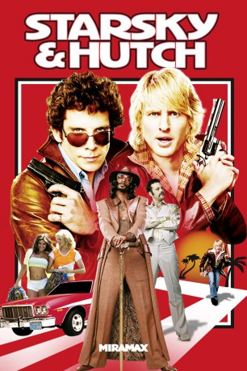

#2936 Starsky & Hutch
 
 IMDB-Wertung: 6.1 / 10
IMDB-Wertung: 6.1 / 10  Metascore: 55
Metascore: 55 
Dace Starsky und Ken Hutchinson, besser bekannt als “Starsky und Hutch” heften sich an die Fersen des zwielichtigen Geschäftsmannes Reese Feldmann und dessen Freundin Kitty. Mit Hilfe ihres gerissenen Informanten Huggy Bear und den Cheerleadern Staci, Holly und Heather wollen der angeknackste Starsky und der Weiberheld Hutch der Gerechtigkeit genüge tun.
Jahr: 2004
Dauer: 100 Minuten
FSK: 12
Land: USA Studio: Warner Bros.Tonspuren:
Untertitel: Deutsch,
Auflösung: 1080p (1920x800) Größe: 8140 MB
Genre: Komödie, Krimi
Regisseur: Todd Phillips
Drehbuch: William Blinn, Stevie Long, John O'Brien, John O'Brien, Todd Phillips
Soundtrack: Theodore Shapiro
Darsteller:
Datei: X:\2004(N-Z)\Starsky & Hutch (2004, FSK12, 1920x800).mkv seit 02.01.2016
Festplatte: HD 2003-2004-2005(A-F)
 Es gibt insgesamt 54 Filme in der Gruppe '2004(N-Z)'
Es gibt insgesamt 54 Filme in der Gruppe '2004(N-Z)'